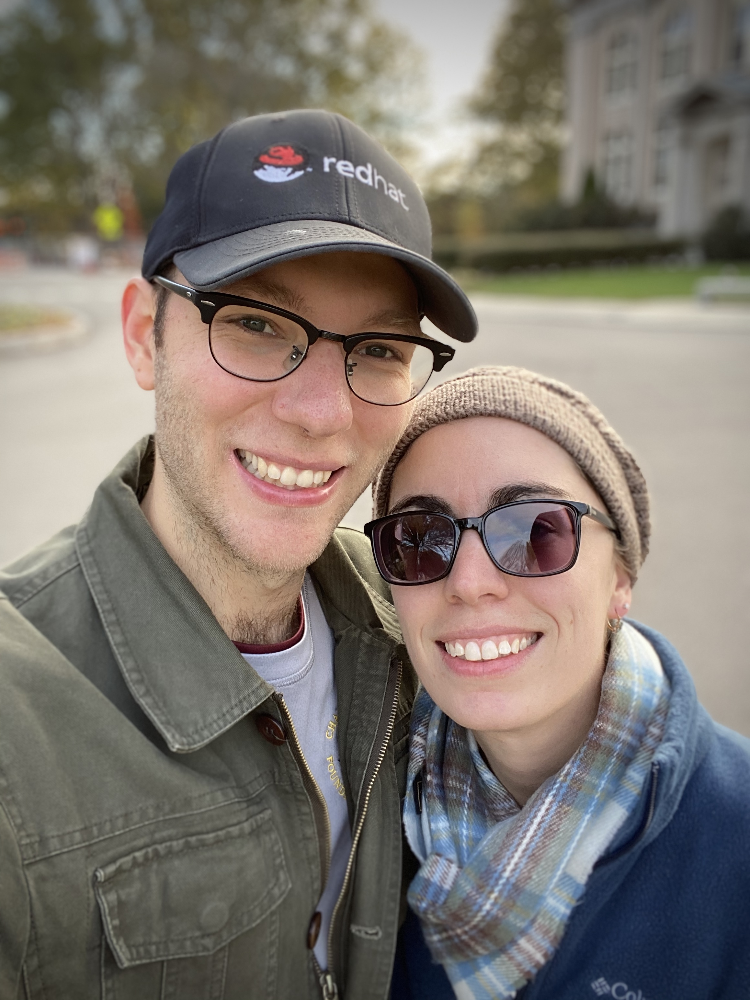

I am a Quality Engineer at Red Hat, living and working in Durham, NC. Previously, I worked at 2Is-Inc as a Back-end Software Developer, creating applications and build systems (mostly in Allegro Common Lisp). Before that, I was a student at Lafayette College, where I majored in Neuroscience and minored in Computer Science.
Outside of work, I am still an enthusiastic Linux user that loves learning about computers, programming languages (especially functional ones), and open source technologies. I am an active member of Code for Durham, and also frequent several other local meet ups in the triangle area.
I am a self-taught learner and continue to study computer science and IT topics by working on personal projects, taking courses, and maintaining my homelab. This website exists to help document the personal projects I work on, and what I’ve learned.
Beyond technology, I love music, writing, the outdoors, and swimming (I competitively swam from the age of 8, through college). I am married to Rebecca, a second year Anaesthesia resident at Duke. We have been together for over 13 years and were married on September 17th, 2016 (the day before our 10th anniversary).
Feel free to contact me using any of the methods below.
Contact
In addition to the contact icons at the bottom of the website, I can be reached via these additional methods:
- Email: ryan@himmelwright.net
- IRC: I’m often freenode as
himmAllRightorrhimmelw - Telegram:
@himmAllRight